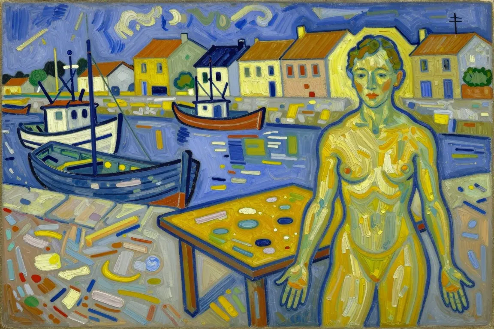

painting · 1886–1905 · also: Cézanne's structure, Van Gogh and Gauguin
Painters who kept the bright colour of Impressionism and gave it back structure, feeling and symbol. Cézanne builds solid form from planes of colour; Van Gogh and Gauguin use bold colour, thick stroke and flat shape for emotion.

Core thesis
A picture should do more than record a glance: colour, line and stroke build lasting form and carry the feeling of the painter.
Design principles
Build each form from small, parallel strokes of 5–15mm that follow its surface and turn it from warm to cool.
Show a still life or a landscape from two or more eye levels, so that the table tilts up and the plates seem to lean.
Choose colour for its force: a yellow of full chroma, a blue night, an orange ground, a green shadow.
Outline the main shapes in a dark blue or brown line of 3–8mm, and keep the colour inside flat or in rhythmic strokes.
Flatten the space: reduce the depth to 2–3 layers, and let the tilted ground rise toward the picture plane.
Lay thick, visible paint of 2–5mm in the strokes that move around the focal form, so that the stroke is a drawing.
Select a plain subject, such as a bedroom, an apple, a mountain, a field or a face, and hold it close.
Anti-patterns
A fleeting, blurred impression of light with soft, lost edges
Deep, single-point perspective with a receding floor